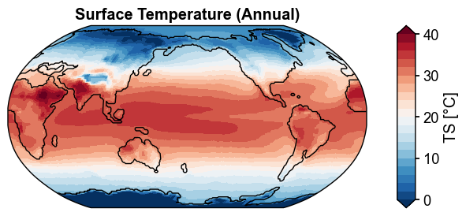
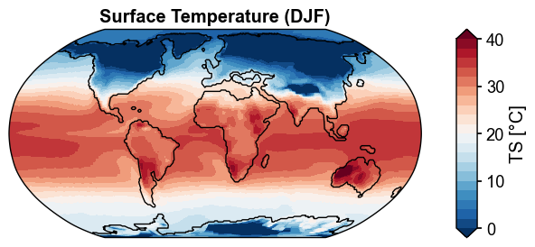
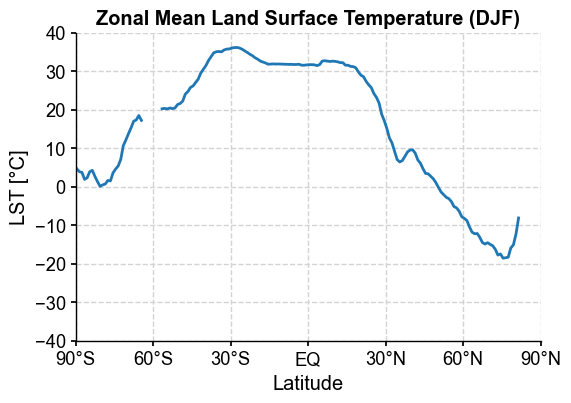
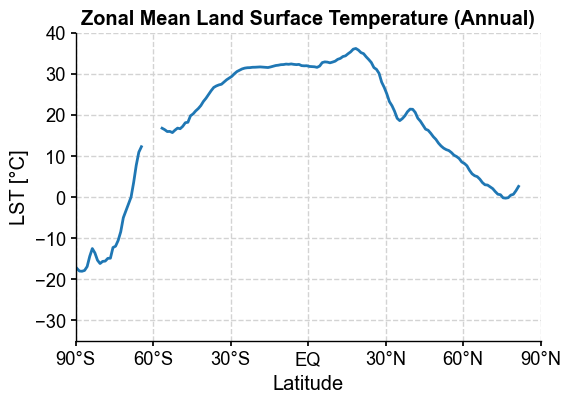
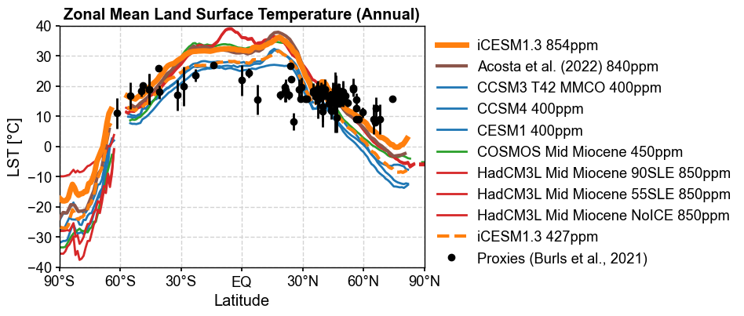
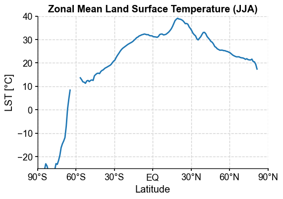
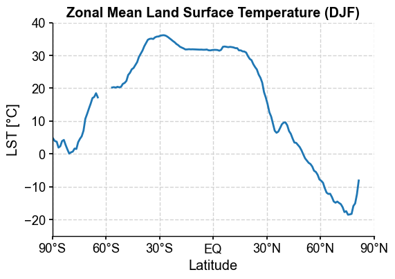
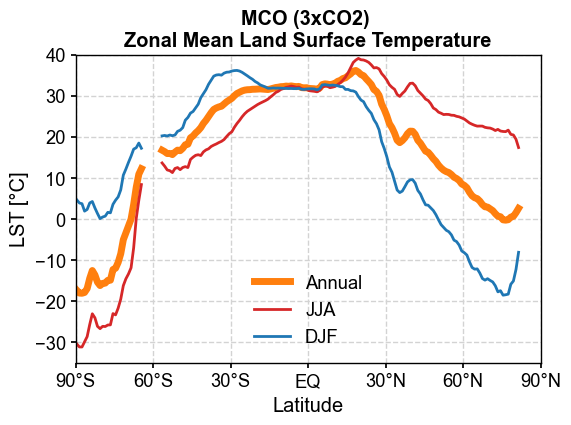
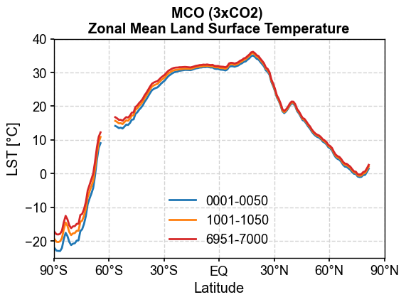

Diagnostics: ATM#
[1]:
%load_ext autoreload
%autoreload 2
import os
os.chdir('/glade/u/home/fengzhu/Github/x4c/docsrc/notebooks')
import numpy as np
import x4c
print(x4c.__version__)
2024.4.20
Load a postprocessed CESM timeseries case#
[2]:
dirpath = '/glade/campaign/univ/ubrn0018/fengzhu/CESM_output/timeseries/b.e13.B1850C5.ne16_g16.icesm131_d18O_fixer.Miocene.3xCO2.005'
case = x4c.Timeseries(dirpath)
>>> case.root_dir: /glade/campaign/univ/ubrn0018/fengzhu/CESM_output/timeseries/b.e13.B1850C5.ne16_g16.icesm131_d18O_fixer.Miocene.3xCO2.005
>>> case.path_pattern: comp/proc/tseries/month_1/casename.mdl.h_str.vn.timespan.nc
>>> case.grid_dict: {'atm': 'ne16', 'lnd': 'ne16', 'rof': 'ne16', 'ocn': 'g16', 'ice': 'g16'}
>>> case.vars_info created
ts:GMST#
[6]:
x4c.set_style('web', font_scale=1.2)
case.calc('ts:GMST:ann', load_idx=-1)
fig, ax = case.plot('ts:GMST:ann')
>>> case.ds["TS"] already loaded but will be reloaded due to a different `load_idx`
>>> case.ds["TS"] created
>>> case.diags["ts:GMST:ann"] created

[7]:
case.calc('ts:GMST:6,7,8', load_idx=-2)
fig, ax = case.plot('ts:GMST:6,7,8')
>>> case.ds["TS"] already loaded but will be reloaded due to a different `load_idx`
>>> case.ds["TS"] created
>>> case.diags["ts:GMST:6,7,8"] created

For arbitrary available variables, we may use the below general spell:
[17]:
spell = 'ts:TS:3,4,5,6:nhm'
case.calc(spell, load_idx=-2, long_name='Surface Temperature', units='degC')
fig, ax = case.plot(spell)
case.diags['ts:TS:3,4,5,6:nhm']
>>> case.ds["TS"] already loaded; to reload, run case.clear_ds("TS") before case.load("TS")
>>> case.diags["ts:TS:3,4,5,6:nhm"] created
[17]:
<xarray.DataArray 'TS' (time: 50)> Size: 400B
array([23.8815013 , 23.53802779, 23.47387981, 23.69353952, 23.6551143 ,
23.69230387, 23.44217141, 23.84005448, 23.93749008, 24.04783635,
23.66552559, 23.64886851, 23.64609877, 23.74462641, 23.74364426,
23.90818716, 23.65460965, 23.56702371, 23.6374326 , 23.71982602,
23.61807899, 23.40414806, 23.42462566, 23.59779815, 23.55000322,
23.71242357, 23.69175105, 23.61985485, 23.75234105, 23.68608114,
23.65264815, 23.43326939, 23.54698786, 23.63202505, 23.5304082 ,
23.55113181, 23.84326194, 23.67020581, 23.56024177, 23.70268516,
23.7766659 , 23.66837972, 23.52561662, 23.81023253, 23.8115102 ,
23.75188398, 23.85289667, 24.07972022, 23.68045728, 23.70148627])
Coordinates:
* time (time) object 400B 6901-06-30 00:00:00 ... 6950-06-30 00:00:00
Attributes:
units: °C
long_name: NH Mean Surface Temperature (MAMJ)
cell_methods: time: mean
path: /glade/campaign/univ/ubrn0018/fengzhu/CESM_output/timeseri...
gw: <xarray.DataArray 'gw' (ncol: 13826)> Size: 111kB\narray([...
lat: <xarray.DataArray 'lat' (ncol: 13826)> Size: 111kB\narray(...
lon: <xarray.DataArray 'lon' (ncol: 13826)> Size: 111kB\narray(...
comp: atm
grid: ne16
map:TS#
[60]:
x4c.set_style('journal', font_scale=1.2)
case.calc('map:TS:ann', load_idx=-1)
fig, ax = case.plot('map:TS:ann')
>>> case.ds["TS"] already loaded; to reload, run case.clear_ds("TS") before case.load("TS")
>>> case.diags["map:TS:ann"] created
>>> case.ds["SSH"] already loaded; to reload, run case.clear_ds("SSH") before case.load("SSH")

[62]:
case.calc('map:TS:-12,1,2', load_idx=-1)
fig, ax = case.plot('map:TS:-12,1,2', central_longitude=0, cyclic=True)
>>> case.ds["TS"] already loaded; to reload, run case.clear_ds("TS") before case.load("TS")
>>> case.diags["map:TS:-12,1,2"] created
>>> case.ds["SSH"] already loaded; to reload, run case.clear_ds("SSH") before case.load("SSH")

map:LST#
[65]:
x4c.set_style('journal', font_scale=1.2)
case.calc('map:LST:ann', load_idx=-1)
fig, ax = case.plot(
'map:LST:ann',
figsize=(6, 6),
cbar_kwargs={'orientation': 'horizontal', 'aspect': 20, 'pad': 0.05},
)
x4c.showfig(fig)
x4c.savefig(fig, './figs/map_LST_ann.pdf')
>>> case.ds["TS"] already loaded; to reload, run case.clear_ds("TS") before case.load("TS")
Regridding from [1, 13826] to [180, 360]
>>> case.ds["LANDFRAC"] created
>>> case.diags["map:LST:ann"] created
>>> case.ds["SSH"] already loaded; to reload, run case.clear_ds("SSH") before case.load("SSH")

Figure saved at: "figs/map_LST_ann.pdf"
[4]:
import pandas as pd
filename = '/glade/work/fengzhu/Projects/MioMIP1/Data_02_28_20_clean_MidMioceneSlab_MAT.csv'
MIDMIO_MAT = pd.read_csv(filename, header=0, sep=',')
MIDMIO_MAT
[4]:
| Palaeo_lat | Palaeo_long | MAT | uncert | Palaeo_long_adjusted | |
|---|---|---|---|---|---|
| 0 | 56.364 | 71.822 | 9.00 | 1.00 | 71.822 |
| 1 | 41.092 | 34.232 | 19.00 | 1.80 | 34.232 |
| 2 | 39.064 | 33.475 | 19.00 | 1.80 | 33.475 |
| 3 | 47.516 | 14.805 | 18.50 | 2.50 | 14.805 |
| 4 | 37.692 | 27.013 | 19.15 | 2.15 | 27.013 |
| ... | ... | ... | ... | ... | ... |
| 106 | -48.902 | 178.054 | 20.20 | 1.00 | 178.054 |
| 107 | -61.581 | 133.736 | 11.00 | 5.00 | 133.736 |
| 108 | 36.482 | 105.144 | 16.50 | 2.50 | 105.144 |
| 109 | -31.600 | 132.418 | 17.00 | 5.00 | 132.418 |
| 110 | 36.091 | 99.780 | 15.15 | 0.95 | 99.780 |
111 rows × 5 columns
[5]:
x4c.set_style('journal', font_scale=1.2)
case.calc('map:LST:ann', load_idx=-1)
fig, ax = case.plot(
'map:LST:ann',
figsize=(6, 6),
cbar_kwargs={'orientation': 'horizontal', 'aspect': 20, 'pad': 0.05},
df_sites=MIDMIO_MAT, colname_dict={
'lat': 'Palaeo_lat',
'lon': 'Palaeo_long',
'value': 'MAT',
}
)
x4c.showfig(fig)
x4c.savefig(fig, './figs/map_LST_ann_with_sites.pdf')
>>> case.ds["TS"] already loaded; to reload, run case.clear_ds("TS") before case.load("TS")
>>> case.ds["LANDFRAC"] already loaded; to reload, run case.clear_ds("LANDFRAC") before case.load("LANDFRAC")
>>> case.diags["map:LST:ann"] created
>>> case.ds["SSH"] already loaded; to reload, run case.clear_ds("SSH") before case.load("SSH")

Figure saved at: "figs/map_LST_ann_with_sites.pdf"
[13]:
case.calc('map:LST:6,7,8', load_idx=-1)
fig, ax = case.plot(
'map:LST:6,7,8',
figsize=(6, 6),
cbar_kwargs={'orientation': 'horizontal', 'aspect': 20, 'pad': 0.05},
central_longitude=0,
)
x4c.showfig(fig)
>>> case.ds["TS"] already loaded; to reload, run case.clear_ds("TS") before case.load("TS")
>>> case.ds["LANDFRAC"] already loaded; to reload, run case.clear_ds("LANDFRAC") before case.load("LANDFRAC")
>>> case.diags["map:LST:6,7,8"] created
>>> case.ds["SSH"] already loaded; to reload, run case.clear_ds("SSH") before case.load("SSH")

Note the blank line above. We can set cyclic=True to avoid it.
[14]:
case.calc('map:LST:-12,1,2', load_idx=-1)
fig, ax = case.plot(
'map:LST:-12,1,2',
figsize=(6, 6),
cbar_kwargs={'orientation': 'horizontal', 'aspect': 20, 'pad': 0.05},
central_longitude=0,
cyclic=True,
)
x4c.showfig(fig)
>>> case.ds["TS"] already loaded; to reload, run case.clear_ds("TS") before case.load("TS")
>>> case.ds["LANDFRAC"] already loaded; to reload, run case.clear_ds("LANDFRAC") before case.load("LANDFRAC")
>>> case.diags["map:LST:-12,1,2"] created
>>> case.ds["SSH"] already loaded; to reload, run case.clear_ds("SSH") before case.load("SSH")

zm:LST#
[9]:
x4c.set_style('journal', font_scale=1.2)
case.calc('zm:LST:ann', load_idx=-1)
fig, ax = case.plot(
'zm:LST:ann',
figsize=(6, 4)
)
Regridding from [1, 13826] to [180, 360]
>>> case.ds["TS"] created
Regridding from [1, 13826] to [180, 360]
>>> case.ds["LANDFRAC"] created
>>> case.diags["zm:LST:ann"] created

[10]:
import pandas as pd
filename='/glade/work/fengzhu/Projects/MioMIP1/Data_02_28_20_clean_MidMioceneSlab_MAT.csv'
MIDMIO_MAT = pd.read_csv(filename, header=0, sep=',')
MIDMIO_MAT2= MIDMIO_MAT.values[0:-1,:]
MidMioLat=np.asarray(MIDMIO_MAT2[:,0],dtype=np.float64)
MidMioLon=np.asarray(MIDMIO_MAT2[:,1],dtype=np.float64)
MidMioMAT=np.asarray(MIDMIO_MAT2[:,2],dtype=np.float64)
MidMioMATUncert=np.asarray(MIDMIO_MAT2[:,3],dtype=np.float64)
ds_PA = x4c.load_dataset('/glade/campaign/univ/ubrn0018/data/climo/B.MMIOx2_C5_840_WISOon.cam.h0.2100-2199.climo.nc')
tas_PA = ds_PA['TS'].x.annualize()
landfrac_PA = ds_PA['LANDFRAC'].x.annualize()
lst_PA = (tas_PA-273.15).where(landfrac_PA>0.5)
da_PA_zm = lst_PA.x.zm
da_PA_zm
[10]:
<xarray.DataArray 'TS' (lat: 96)> Size: 384B
array([-23.867989 , -21.863722 , -22.074615 , -19.277302 ,
-19.482302 , -21.576187 , -21.35801 , -20.967377 ,
-17.758644 , -14.613809 , -9.420395 , -7.455729 ,
-0.62429357, 5.711548 , nan, nan,
nan, nan, nan, 13.547089 ,
12.772919 , 14.267558 , 15.200829 , 16.259644 ,
18.08408 , 19.035824 , 20.59886 , 22.15566 ,
24.054607 , 24.945066 , 26.429026 , 27.827711 ,
29.018785 , 30.350153 , 32.106663 , 33.251812 ,
32.512035 , 32.84953 , 33.101173 , 32.51787 ,
32.31547 , 32.22813 , 32.32932 , 31.86914 ,
31.678835 , 31.251896 , 30.963312 , 30.95115 ,
31.167423 , 30.643322 , 30.977633 , 31.792067 ,
31.561476 , 32.339798 , 34.72491 , 36.587757 ,
37.664883 , 37.82791 , 37.302532 , 36.579185 ,
35.484615 , 33.503506 , 31.413298 , 27.916632 ,
24.920673 , 21.714985 , 19.608759 , 18.537817 ,
21.215086 , 20.70523 , 18.496826 , 16.708508 ,
15.485137 , 14.0905 , 12.19612 , 10.738356 ,
9.880558 , 8.8774605 , 7.783376 , 6.4353495 ,
5.102632 , 3.1150017 , 2.3693674 , 0.9280669 ,
0.09491364, -1.0225865 , -2.0850809 , -3.2422194 ,
-3.0250323 , -2.8431134 , -2.3544686 , nan,
nan, nan, nan, nan],
dtype=float32)
Coordinates:
* lat (lat) float64 768B -90.0 -88.11 -86.21 -84.32 ... 86.21 88.11 90.0
Attributes:
units: K
long_name: Surface temperature (radiative)
cell_methods: time: mean within years time: mean over years[11]:
dirpath = '/glade/campaign/univ/ubrn0018/fengzhu/CESM_output/timeseries/b.e13.B1850C5.ne16_g16.icesm131_d18O_fixer.Miocene.1.5xCO2.005'
case2 = x4c.Timeseries(dirpath)
case2.calc('zm:LST:ann')
>>> case.root_dir: /glade/campaign/univ/ubrn0018/fengzhu/CESM_output/timeseries/b.e13.B1850C5.ne16_g16.icesm131_d18O_fixer.Miocene.1.5xCO2.005
>>> case.path_pattern: comp/proc/tseries/month_1/casename.mdl.h_str.vn.timespan.nc
>>> case.grid_dict: {'atm': 'ne16', 'lnd': 'ne16', 'rof': 'ne16', 'ocn': 'g16', 'ice': 'g16'}
>>> case.vars_info created
Regridding from [1, 13826] to [180, 360]
>>> case.ds["TS"] created
Regridding from [1, 13826] to [180, 360]
>>> case.ds["LANDFRAC"] created
>>> case.diags["zm:LST:ann"] created
[12]:
case2.diags['zm:LST:Acosta'] = da_PA_zm
[13]:
import xarray as xr
MioMIP1=xr.open_dataset('/glade/work/fengzhu/Projects/MioMIP1/MioMIP1.nc',decode_times=False)
[15]:
clr_dict = {
# 'COSMOS Late Miocene 278ppm': 'tab:cyan',
# 'COSMOS Late Miocene 450ppm': 'tab:cyan',
# 'COSMOS Late Miocene ICEQ 278ppm': 'tab:cyan',
# 'COSMOS Late Miocene ICEQ 450ppm': 'tab:cyan',
# 'NorESM-L 10Ma 350ppm': 'tab:brown',
# 'NorESM-L 10Ma 560ppm': 'tab:brown',
# 'CCSM-NH3 355ppm': 'tab:blue',
# 'CCSM-NH3 560ppm': 'tab:blue',
'CCSM3 T42 MMCO 400ppm': 'tab:blue',
# 'CCSM3 T42 MMCO 200ppm': 'tab:blue',
# 'CCSM3 T42 MMG 200ppm': 'tab:blue',
# 'CCSM3 T42 MMG 400ppm': 'tab:blue',
'CCSM4 400ppm': 'tab:blue',
'CESM1 400ppm': 'tab:blue',
# 'COSMOS Mid Miocene 278ppm': 'tab:green',
'COSMOS Mid Miocene 450ppm': 'tab:green',
# 'HadCM3L Mid Miocene 90SLE 280ppm': 'tab:red',
# 'HadCM3L Mid Miocene 90SLE 400ppm': 'tab:red',
# 'HadCM3L Mid Miocene 90SLE 560ppm': 'tab:red',
'HadCM3L Mid Miocene 90SLE 850ppm': 'tab:red',
# 'HadCM3L Mid Miocene 55SLE 280ppm': 'tab:red',
# 'HadCM3L Mid Miocene 55SLE 400ppm': 'tab:red',
# 'HadCM3L Mid Miocene 55SLE 560ppm': 'tab:red',
'HadCM3L Mid Miocene 55SLE 850ppm': 'tab:red',
# 'HadCM3L Mid Miocene NoICE 280ppm': 'tab:red',
# 'HadCM3L Mid Miocene NoICE 400ppm': 'tab:red',
# 'HadCM3L Mid Miocene NoICE 560ppm': 'tab:red',
'HadCM3L Mid Miocene NoICE 850ppm': 'tab:red',
# 'HadCM3L Langhian 280ppm': 'tab:red',
# 'HadCM3L Langhian 400ppm': 'tab:red',
# 'HadCM3L Langhian 560ppm': 'tab:red',
# 'HadCM3L Late Miocene 280ppm': 'tab:red',
# 'HadCM3L Late Miocene 400ppm': 'tab:red',
# 'HadCM3L Tortonian 400ppm': 'tab:red',
# 'HadCM3L Messinian 400ppm': 'tab:red',
# 'IPSLCM 20Ma 420ppm': 'tab:orange',
# 'IPSLCM 20Ma 560ppm': 'tab:orange',
# 'IPSLCM 20Ma 840ppm': 'tab:orange',
# 'IPSLCM 20Ma NoGIS 560ppm': 'tab:orange',
# 'NorESM-L 20Ma 350ppm': 'tab:purple',
# 'NorESM-L 20Ma 560ppm': 'tab:purple',
}
x4c.set_style('journal_spines', font_scale=1.2)
case.calc('zm:LST:ann', load_idx=-1)
fig, ax = case.plot('zm:LST:ann', figsize=(6, 4), label='iCESM1.3 854ppm', color='tab:orange', zorder=101, lw=5)
ax = case2.plot('zm:LST:Acosta', ax=ax, label='Acosta et al. (2022) 840ppm', color='tab:brown', zorder=99, lw=3)
for exp, clr in clr_dict.items():
MioMIP1.LTS_ZM.sel(exp=exp).plot(ax=ax, label=exp, color=clr)
ax = case2.plot('zm:LST:ann', ax=ax, label='iCESM1.3 427ppm', linestyle='--', color='tab:orange', zorder=100, lw=3, ylim=(-40, 40))
ax.errorbar(MidMioLat, MidMioMAT, yerr=MidMioMATUncert, ls='none', color='k', zorder=102)
ax.plot(MidMioLat, MidMioMAT, marker='o', ls='none', color='k', label='Proxies (Burls et al., 2021)', zorder=102)
ax.legend(frameon=False, bbox_to_anchor=(1, 1))
x4c.showfig(fig)
x4c.savefig(fig, './figs/zm_LST_ann_compare_model-data.pdf')
>>> case.ds["TS"] already loaded; to reload, run case.clear_ds("TS") before case.load("TS")
>>> case.ds["LANDFRAC"] already loaded; to reload, run case.clear_ds("LANDFRAC") before case.load("LANDFRAC")
>>> case.diags["zm:LST:ann"] created

Figure saved at: "figs/zm_LST_ann_compare_model-data.pdf"
[7]:
x4c.set_style('journal', font_scale=1.2)
case.calc('zm:LST:6,7,8', load_idx=-1)
fig, ax = case.plot(
'zm:LST:6,7,8',
figsize=(6, 4)
)
>>> case.ds["TS"] already loaded; to reload, run case.clear_ds("TS") before case.load("TS")
>>> case.ds["LANDFRAC"] already loaded; to reload, run case.clear_ds("LANDFRAC") before case.load("LANDFRAC")
>>> case.diags["zm:LST:6,7,8"] created

[8]:
x4c.set_style('journal', font_scale=1.2)
case.calc('zm:LST:-12,1,2', load_idx=-1)
fig, ax = case.plot(
'zm:LST:-12,1,2',
figsize=(6, 4)
)
>>> case.ds["TS"] already loaded; to reload, run case.clear_ds("TS") before case.load("TS")
>>> case.ds["LANDFRAC"] already loaded; to reload, run case.clear_ds("LANDFRAC") before case.load("LANDFRAC")
>>> case.diags["zm:LST:-12,1,2"] created

[9]:
x4c.set_style('journal_spines', font_scale=1.2)
fig, ax = case.plot('zm:LST:ann', figsize=(6, 4), label='Annual', color='tab:orange', lw=5, ylim=(-35, 40))
ax = case.plot('zm:LST:6,7,8', ax=ax, label='JJA', color='tab:red', ylim=(-35, 40))
ax = case.plot('zm:LST:-12,1,2', ax=ax, label='DJF', color='tab:blue', ylim=(-35, 40))
ax.set_title('MCO (3xCO2) \nZonal Mean Land Surface Temperature', weight='bold')
ax.legend(loc='lower center')
x4c.showfig(fig)
x4c.savefig(fig, './figs/zm_LST_compare_seasons.pdf')

Figure saved at: "figs/zm_LST_compare_seasons.pdf"
[7]:
x4c.set_style('journal_spines', font_scale=1.2)
case.clear_ds()
case.calc('zm:LST:ann', load_idx=0)
fig, ax = case.plot('zm:LST:ann', figsize=(6, 4), label='0001-0050', color='tab:blue')
case.clear_ds()
case.calc('zm:LST:ann', load_idx=20)
ax = case.plot('zm:LST:ann', ax=ax, label='1001-1050', color='tab:orange')
case.clear_ds()
case.calc('zm:LST:ann', load_idx=-1)
ax = case.plot('zm:LST:ann', ax=ax, label='6951-7000', color='tab:red')
ax.set_title('MCO (3xCO2) \nZonal Mean Land Surface Temperature', weight='bold')
ax.legend(loc='lower center')
x4c.showfig(fig)
x4c.savefig(fig, './figs/zm_LST_compare_spin-ups.pdf')
Regridding from [1, 13826] to [180, 360]
>>> case.ds["TS"] created
Regridding from [1, 13826] to [180, 360]
>>> case.ds["LANDFRAC"] created
>>> case.diags["zm:LST:ann"] created
Regridding from [1, 13826] to [180, 360]
>>> case.ds["TS"] created
Regridding from [1, 13826] to [180, 360]
>>> case.ds["LANDFRAC"] created
>>> case.diags["zm:LST:ann"] created
Regridding from [1, 13826] to [180, 360]
>>> case.ds["TS"] created
Regridding from [1, 13826] to [180, 360]
>>> case.ds["LANDFRAC"] created
>>> case.diags["zm:LST:ann"] created

Figure saved at: "figs/zm_LST_compare_spin-ups.pdf"
[ ]: